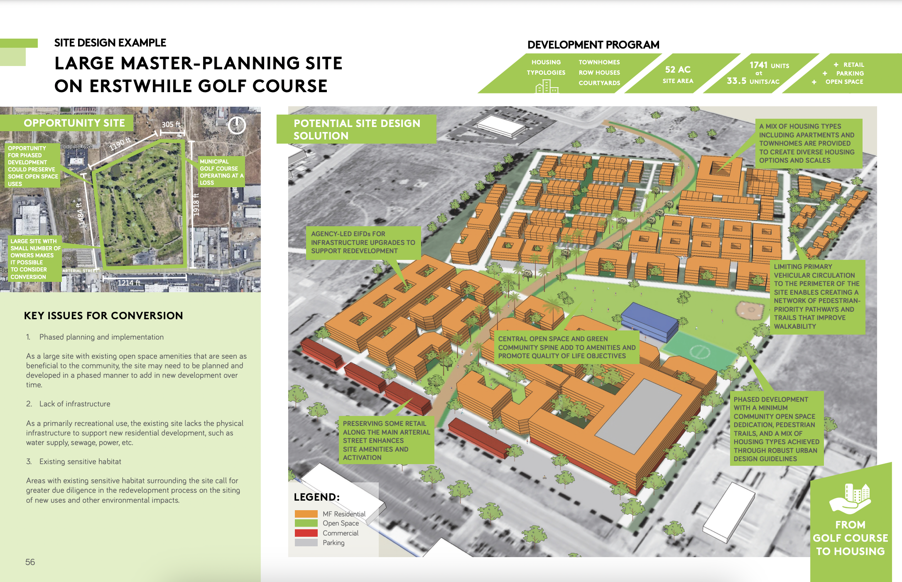
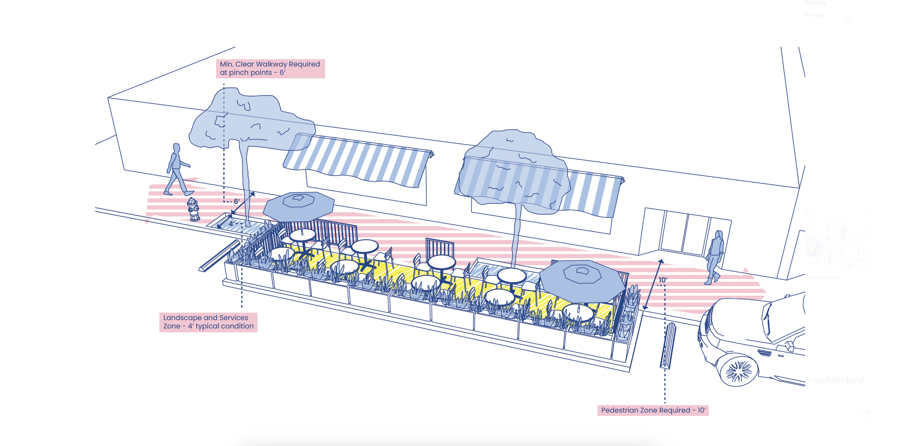

My Current Role
I have been working as a GIS Specialist for Parsons Corporation in NYC for the past two years. This role is incredibly rewarding, as it allows me to apply my GIS skills to real-world problems and contribute to meaningful projects, that I can witness in real-time. I mainly work on environmental remediation and transportation projects around the US, but assist on various other GIS-related tasks intermitttently.
Education and Background
I am pursuing a MS in Spatial Data Science at the Spatial Sciences Institute at the University of Southern California (USC). I am in my second year of the program, taking classes on SSCI 591: Web and Mobile GIS and SSCI 575: Spatial Data Science.
I have a Bachelor's of Science degree in GeoDesign from USC (Grad 2023), where I developed a strong foundation in GIS and spatial analysis in combination with urban planning and architecture. This unique degree has allowed me to approach GIS problems with a creative, holistic, and design-oriented mindset, which I believe is essential for effective change. During my time at USC, I interned at Studio-11 in Long Beach, CA, where I worked on a variety of urban planning projects, often contributing to visualizations that helped communicate complex spatial data to stakeholders.
Studio-111 Projects
Below are some of the projects I worked on at Studio-111, during my internship. The first image is part of our award-winning Other-to-Residential toolkit. The second is part of an initiative to bring back sidewalk dining. I created the visualizations in these projects.


What I Like about GIS
Click the button below to learn more about what interets me about GIS.
What makes GIS interesting to me?
Background
I grew up in Brussels, Belgium, and attended an international school where I was consistently exposed to diverse cultures and perspectives. This early exposure to different ways of thinking has greatly influenced my approach to problem-solving and collaboration in my professional life. Having had the opportunity to live, travel, and study in various countries, I have developed a global perspective that I bring to my work in GIS, allowing me to consider the broader implications of spatial data and its applications.
Off the Clock
When I'm not working, you can usually find me painting/drawing or playing beach volleyball. I like to do anything creative and I love to learn new things - I am currently learning to Ice Skate for the first time, and I have recently started wheel-throwing classes. I like to read (mostly fantasy and fiction).
My GIS Journey
GIS has taken me from my hometown in Brussels to USC in Los Angeles, to Parsons Corporation in NYC.